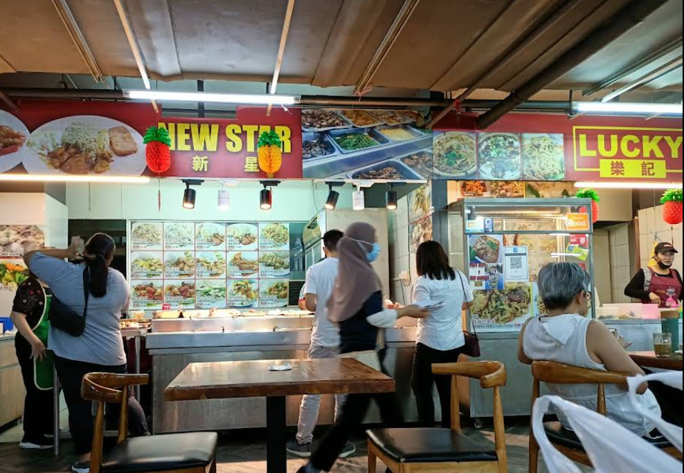

Perak
Concubine Lane
Popular tourist spot in Ipoh Old Town with traditional snacks.
⏰ 9am-5pm
Nasi Lemak
Egg Tarts
White Coffee
Bean Sprout Chicken
Ipoh Hor Fun
Kaya Puff
Cendol
Teh Tarik

Medan Selera Stadium
Ipoh's top late-night food haven with over 50 diverse stalls
⏰ 6:30pm-4am
Nasi Lemak Ayam Goreng
Roti Canai Bom
Satay
Mee Goreng Mamak
Sup Kambing
Roti John
Air Mata Kucing
Apam Balik
Negeri Sembilan
Seremban Night Market
Popular local night market in Seremban.
⏰7pm-10pm(Closed Mon)
Nasi Lemak
Satay
Apam Balik
Seremban Siew Pow
Curry Puffs
Pandan Cake
Cendol
Teh Tarik
Seremban Siew Pow Master
Famous for delicious siew pow (roasted pork bun).
⏰ 9:am-9:30pm
Siew Pow
Egg Tarts
Pork Buns
Chicken Pies
Char Kway Teow
Kaya Puffs
Mee Goreng
Teh Tarik
Kedah
Alor Setar Night Market
Traditional night market with Malay-style food.
⏰ 5pm-10pm(Mon)
Nasi Lemak
Kuih-muih
Sugarcane Juice
Grilled Fish
Laksa Kedah
Pulut Udang
Roti Canai
Teh Tarik
Pekan Rabu Food Court
Great place to try local dishes in Alor Setar.
⏰ 8am-6:30pm
Nasi Lemak Ayam Kunyit
Laksa Kedah
Gulai Nangka
Pulut Mangga
Ikan Bakar
Satay
Mee Goreng
Teh Tarik
Pahang
Kuantan Night Market
Busy night market offering east coast delicacies.
⏰ 4pm-11pm(Sun)
Nasi Kerabu
Grilled Squid
Laksa Pahang
Keropok Lekor
Ikan Bakar
Satay
Apam Balik
Teh Tarik
Tanjung Lumpur Food Court
Seaside hawker area known for seafood specialties.
⏰ 5pm-12am
Satay
Ikan Bakar
Sambal Sotong
Butter Prawns
Mee Goreng
Grilled Fish
Fried Kangkung
Teh Tarik
Perlis
Kangar Night Market
Small but lively market with local specialties.
⏰ 5pm-10pm(WED)
Nasi Kerabu
Apam Balik
Coconut Shakes
Grilled Fish
Pulut Panggang
Laksa Perlis
Roti Canai
Teh Tarik
Restaurant Kak Su Laksa
Iconic Perlis dish served by the seaside.
⏰ 12:30pm-7:30pm
Laksa Perlis
Fish-based Noodles
Fried Keropok
Pulut Mangga
Nasi Lemak
Grilled Seafood
Mee Goreng
Teh Tarik
Terengganu
Pantai Batu Burok
A beachside night market with local dishes.
⏰ 4pm-10pm
Nasi Dagang
Sata
Coconut Rice Desserts
Grilled Fish
Laksa Terengganu
Kuih Akok
Apam Balik
Teh Tarik
Sarawak
Chong Choon Cafe
Famous for Sarawak laksa in a nostalgic kopitiam.
⏰ 7am-12pm
Sarawak Laksa
Kolo Mee
Tomato Mee
Kampua Noodles
Teh C Peng
Sarawak Layer Cake
Roti Canai
Laksa Penang
Lau Ya Keng Food Court
Known for authentic Sarawak-style dishes.
⏰ 6am-2pm
Kolo Mee
Pork Satay
Sarawak Laksa
Kompiang (Sarawak Bun)
Midin Belacan
Umai (Sarawak Sashimi)
Mee Goreng
Teh Tarik
Sabah

Karamunsing Shopping Complex
Kota Kinabalu's iconic open-air food court with authentic Sabahan flavors
⏰ 7:00am-10:00pm (Daily)
Nasi Lemak Sabah
Roti Canai
Tuaran Mee
Hinava (Sabah ceviche)
Amplang (Fish Crackers)
Beef Rendang
Lihing Chicken
Teh C Ping (Iced Milk Tea)
All Images sourced from google map